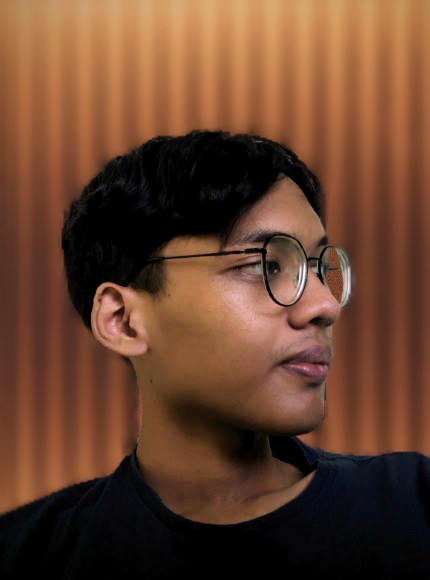

Hi! I'm Rafli,
IT Student, Freelancer & Musician(sort of) born and raised in Jakarta, Indonesia. Whether I'm immersed in my university life or exploring art and the latest of technology, I'm always fueled by curiosity and always up to the challenges.
When I'm not studying, you can find me doing side hustle and other stuff. Whether it's freelancing, programming, writing music, or just simply surfing the web.